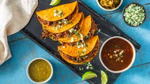

Home
Tacos de Birria

Description
La birria es un guiso de carne a fuego lento, del cual resulta un consomé y una deliciosa carne que se deshace con solo mirarla. Aunque la birria tradicionalmente se hace con cordero, ha tendido a evolucionar hacia la birria de ternera (de res), y es ahora la forma más típica de prepararla. Puedes utilizar muchas partes de la ternera, pero el rabo de toro aporta su característico profundo sabor, y resulta en un relleno muy meloso y jugoso.
El guiso, como tal, puede comerse solo. Pero metido dentro de unas tortillas, acompañado de una cantidad sana de queso oaxaca, y después marcado en la sartén con la grasa resultante del guiso…bueno, eso es simplemente otro rollo. Y si ya después coges ese taco y lo untas en el sabroso y ligeramente picante consomé…. estoy salivando solo de pensarlo.
Ingredients
- 9 tomates maduros (ajitomates)
- 5 chiles anchos
- 8 chiles guajillos
- 2 chiles chipotles en adobo
- 1 cebolla
- 7 dientes de ajo
- 1 cucharada de pimienta negra
- 1 cucharada de pimienta jamaicana
- 1 cucharada de semillas de comino
- 1 cucharada de orégano mexicano (o normal)
- Media rama de canela (pref. Ceylan)
- 1 cucharada de concentrado de tomate
- 600 ml de agua
- 35 ml de vinagre blanco
- 1,5 kg de rabo de toro
- 600 g de costilla de ternera (churrasco)
- 1 L de caldo de ternera
Steps
- Quítales los rabos a los tomates y córtalos por la mitad. Corta la cebolla en trozos grandes.
- Quítales los tallos a los chiles guajillos y anchos y después sácales las semillas.
- Pela los dientes de ajo.
- En una cacerola grande añade la pimienta negra, la pimienta jamaicana, la rama de canela y el comino en grano. Tuéstalas sobre fuego medio hasta que sean fragantes.
- Añade los tomates, la cebolla y los dientes de ajo. Añade el orégano. Rehoga todo durante 5 minutos.
- Añade el concentrado de tomate, los chiles anchos, los chiles guajillos y los chiles chipotles. Rehoga durante 4 minutos más.
- Añade el agua y el vinagre blanco. Llévalo a ebullición y cuece todo 10 minutos.
- Transfiere todos los sólidos a un procesador de alimentos, junto con 1 cazo del agua de cocción. Tritura 2 minutos, hasta que sea fino y sin grumos. Resérvalo.
- Corta el churrasco en trozos medianos. Pon una cacerola sobre fuego alto hasta que esté muy caliente, añade aceite de girasol y marca la carne en tandas, hasta que coja color dorado profundo por todos los lados.
- Añade el caldo de ternera. Desgrasa el fondo. Añade la salsa de chiles y tomates (adobo), y después agua hasta que llegue al borde de la cacerola. Añade una pizca de sal. Mezcla todo bien y cocina durante 2 horas y media, removiendo de vez en cuando para que no se agarre.
- A las 2 horas y media saca las costillas de ternera, quítale los huesos y el cartílago y después pícalo fino. Resérvalo.
- Una hora más tarde (3 horas y media de cocción) saca el rabo de toro, sepáralo del hueso y el cartílago y pícalo fino. Resérvalo.
- Añade sal al consomé al gusto, y un poco de azúcar para corregir la acidez si es necesario.
- Tamiza el consomé a través de un colador, y después resérvalo en la nevera un mínimo de dos horas.
- Sácalo de la nevera y retira la capa de grasa que se habrá formado en la superficie. Reserva la grasa para usarla más tarde.